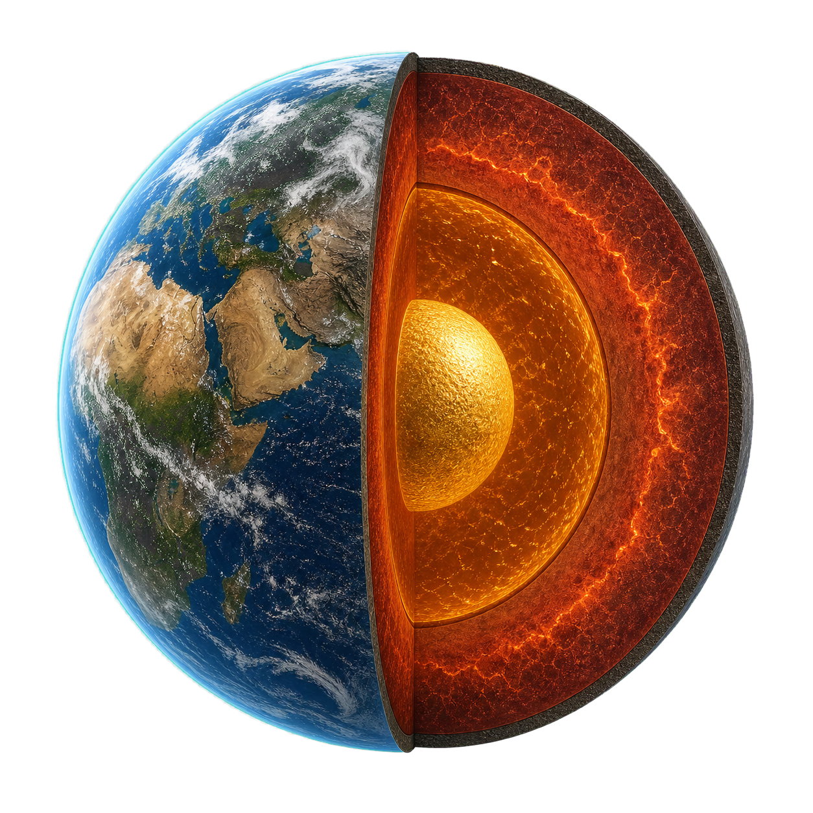

Resolving the model layers…
Geodynamics · Code archaeology · Numerical methods
A field guide to the architecture that turns planetary interiors, deforming crust, and evolving landscapes into parallel numerical models.

Resolving the model layers…